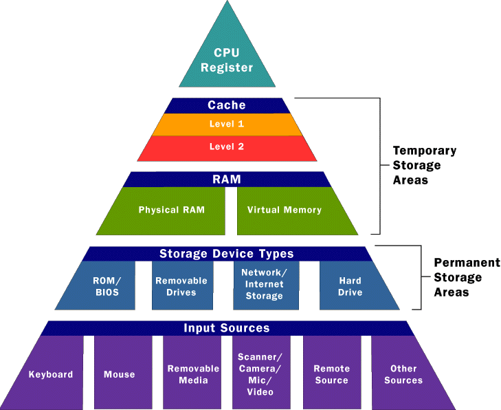

Computer Memory
Like many computer users, I have a notion of what computer memory is. I know I need enough of it to keep my computer from running at a snail's pace. I also know how to monitor CPU usage and available RAM, and how to quit or kill processes that are gobbling up too many resources. I know how to purchase and install RAM upgrades into my computer. I also know that when my RAM is in full use, the CPU starts accessing virtual memory, which is when it accesses the hard disk directly. For this blog post I dug in deeper and learned a little more about how computer memory works.
The CPU of a computer is responsible for retrieving information from available resources. This could be your hard drive, a flash drive, a CD or DVD, etc. As it turns out, accessing information from something like a hard drive takes a relatively long time. Memory allows for faster retrieval of information, by having it on stage and ready to go. Memory is sort of like a director (CPU) calling "action" with the actors in position (RAM), vs. the actors taking a break in their trailers (Hard Disk) and having to scramble out the door to get in front of the camera. The performance can be given either way, in one case it just takes longer. Memory is temporary though, unlike a hard drive. Once the data stored in RAM is no longer needed, it gets purged to allow new data to be stored in RAM.
Computer memory isn't as simple as RAM vs. Hard Disk, however. CPUs these days actually run faster than the RAM in your computer can keep up with. The bits of your processor determines how many bytes your computer can access simultaneously. For every 8 bits it can access 1 byte, so a 64-bit processor can access 8 bytes at a time. The hertz, or clock cycle of the CPU indicates how many times per second those bytes can be accessed. Therefore a 64-bit 2.6GHz (gigahertz) processor could access 8 bytes, 2.6 billion times every second. This is theoretical, however. In reality there's something called latency which is a slight delay that occurs when the CPU reads the first bit of information. There's also still the issue of how can a CPU's speed be utilized to its fullest when RAM can't actually keep up. To address this issue, there's something called cache.
Most computers have a level 1 and a level 2 cache. The level 1 cache is memory located right at the CPU level. Level 2 cache is most often located on the motherboard with a direct connection to the CPU. The memory available in these 2 caches is very small. Level 1 is 2 to 64KB, and level 2 is 256KB to 2MB. Most of the time, the processes a CPU needs to run are handled in these caches. The exchange of data at this level are much faster than RAM to CPU, allowing for the CPU to better utilize its power. These caches make up for what RAM can't do in keeping up with the CPU.
For more a little more in depth overview, please check out this computer memory article on howstuffworks.com.